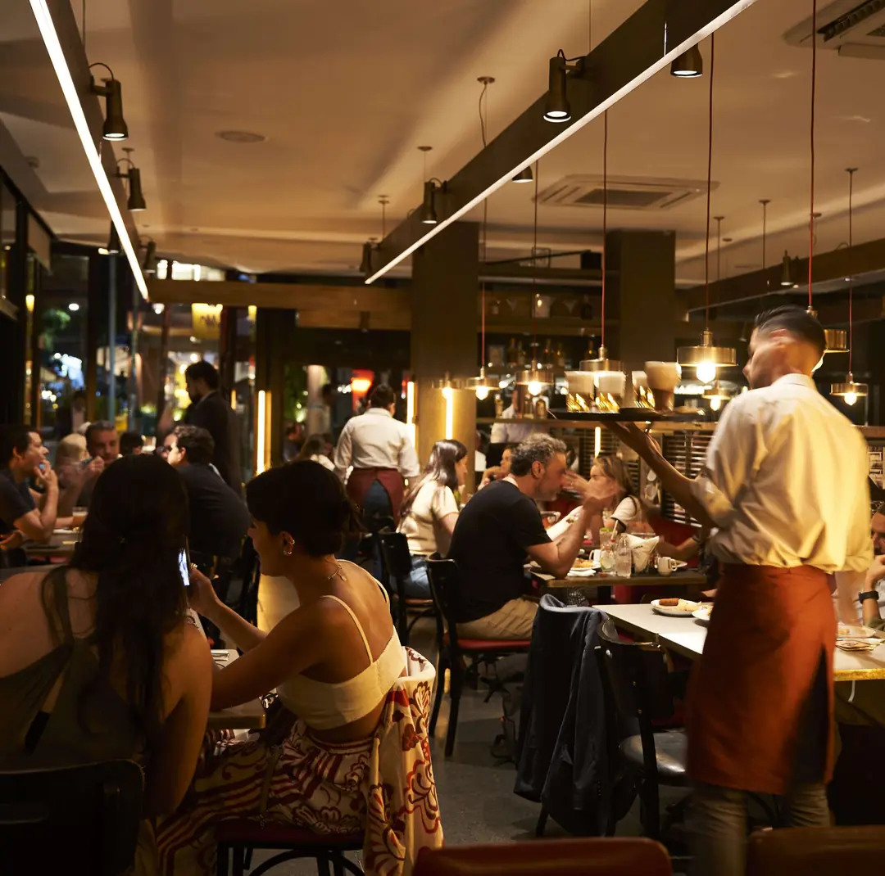
Um bar de alma boêmia · São Paulo
Para cada desejo, um bar. Para todos, Astor.
Clássicos da cozinha boêmia, coquetelaria precisa e encontros que pedem para durar.
O Astor
O Astor é um bar premium e cosmopolita. Em seis endereços em São Paulo, serve coquetelaria precisa e inovadora, cozinha contemporânea e de conforto, chopp bem tirado e uma seleção esperta de vinhos e destilados — com um serviço que chama pelo nome.
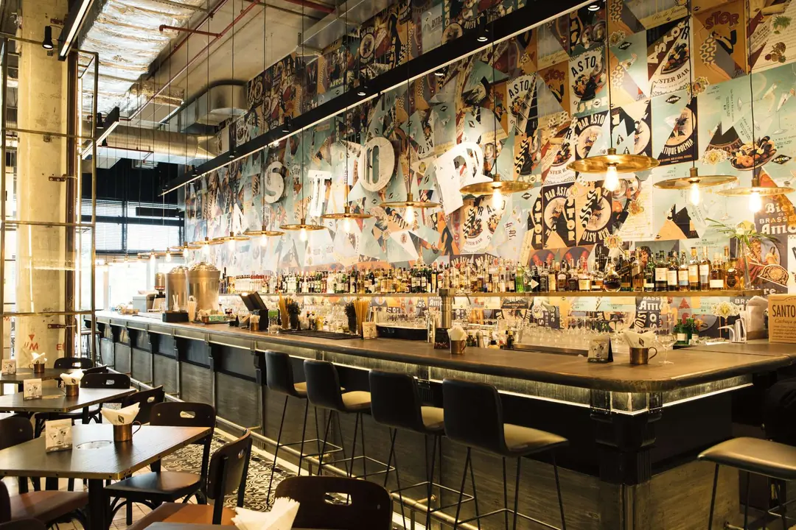
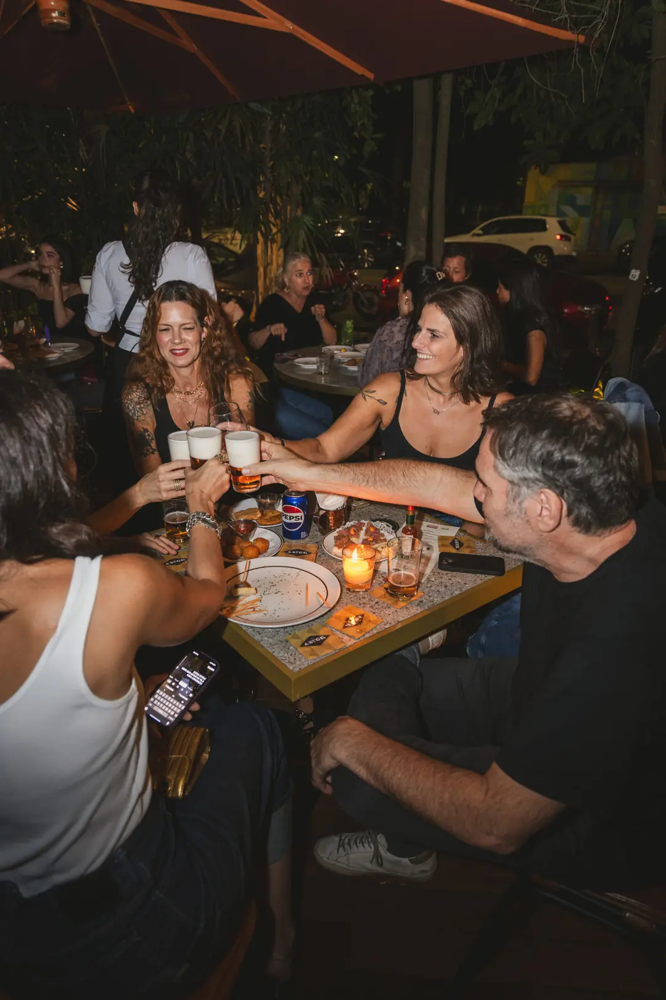
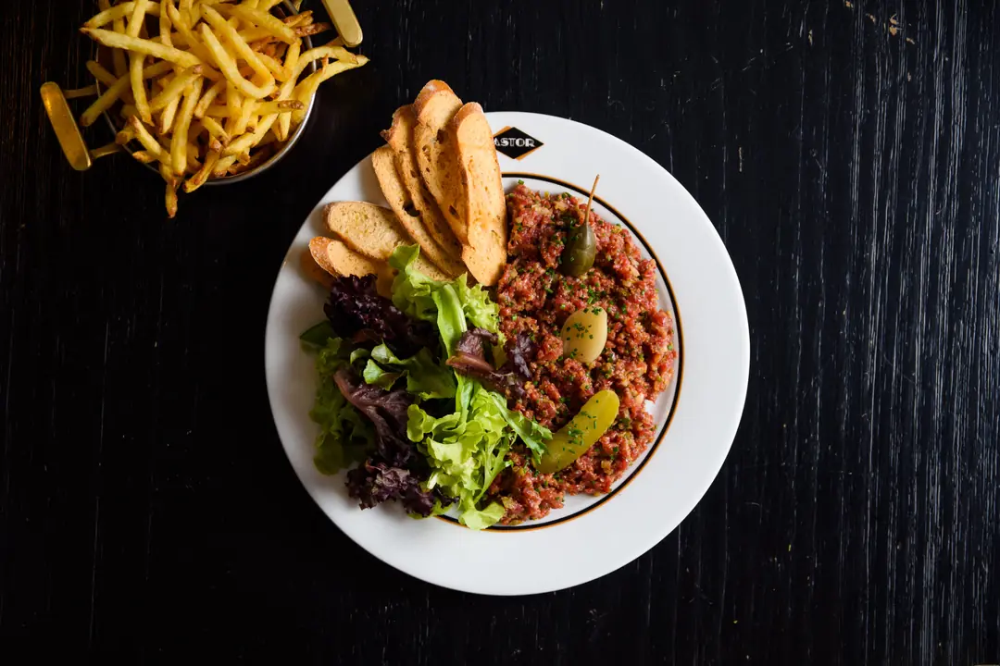
Nossa gastronomia
Pratos que atravessam gerações.
Uma cozinha clássica, com alma brasileira e o toque contemporâneo do Astor.
Os protagonistas
Clássicos da cozinha boêmia com a nossa cara.
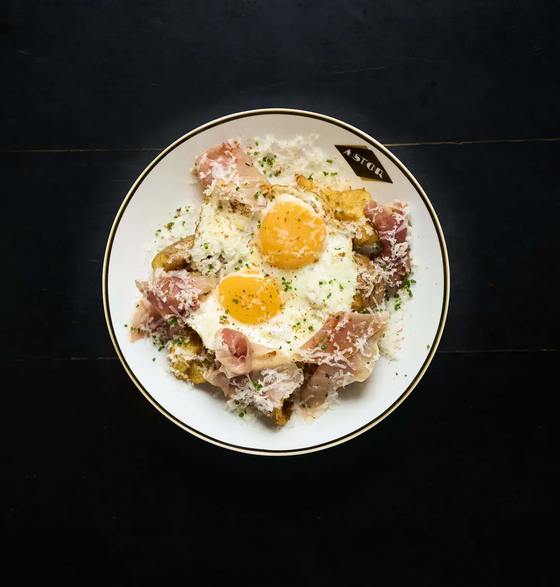
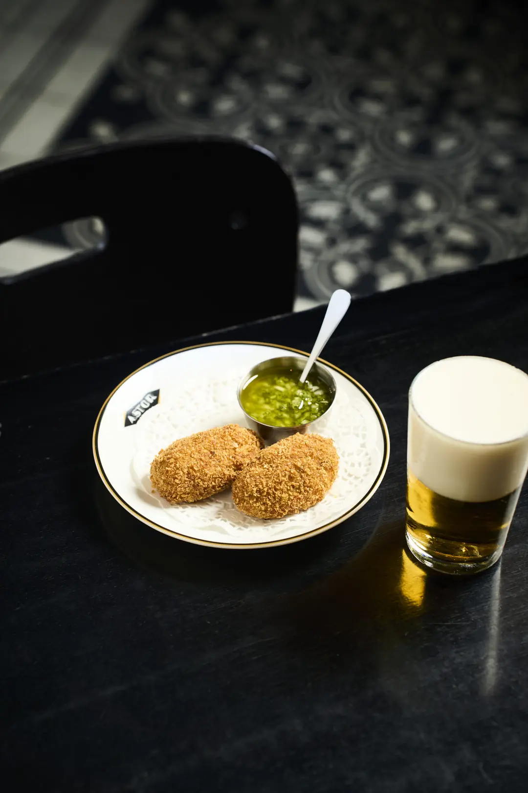
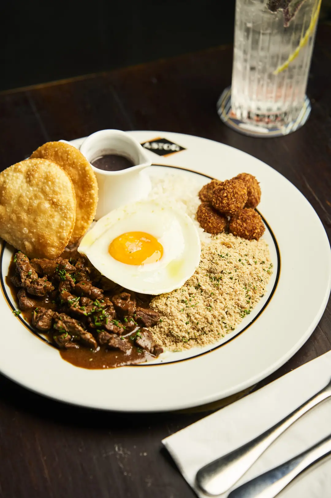
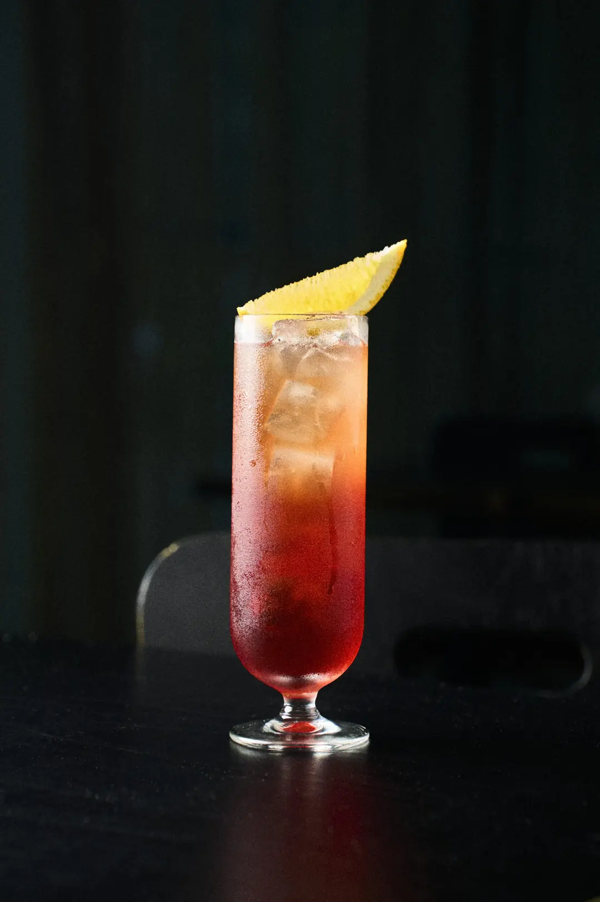
Coquetelaria
Drinks icônicos. Novas histórias.
Uma carta de coquetéis que celebra o clássico e o contemporâneo.
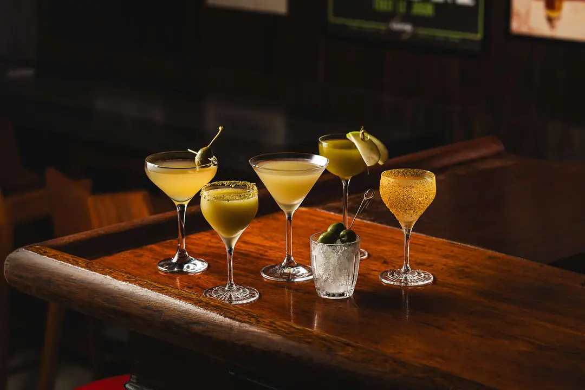
No Bar do Cofre, a carta autoral Biomas do Brasil chega à sua sexta geração. Conheça o Bar do Cofre
Mais do que um encontro. Uma experiência Astor.
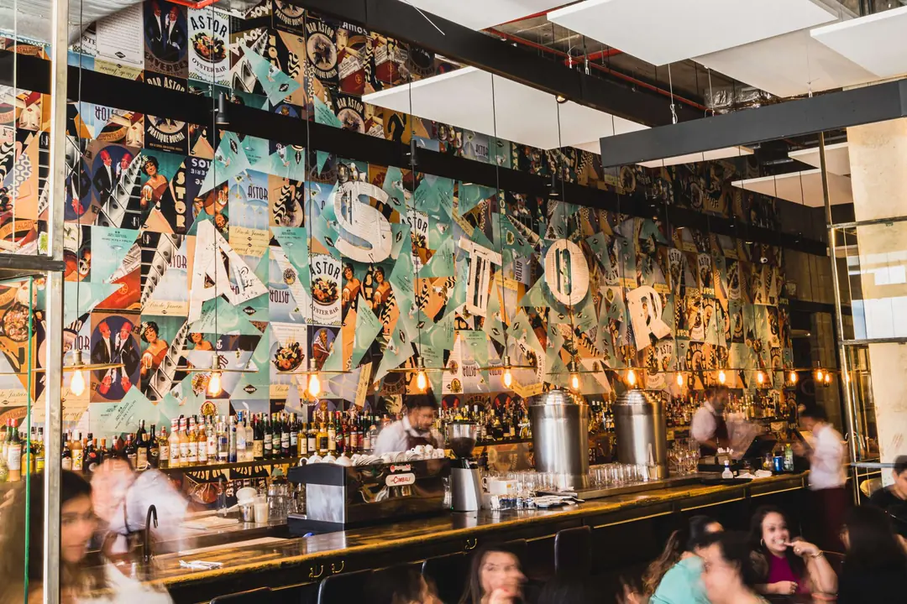
Um serviço que chama pelo nome, em um ambiente encantador.
-
01
Subastor
Para viver um segredo, às vezes é preciso descer um lance de escadas. Escondido atrás de cortinas de veludo, você encontra o bar abaixo do bar.
Saiba mais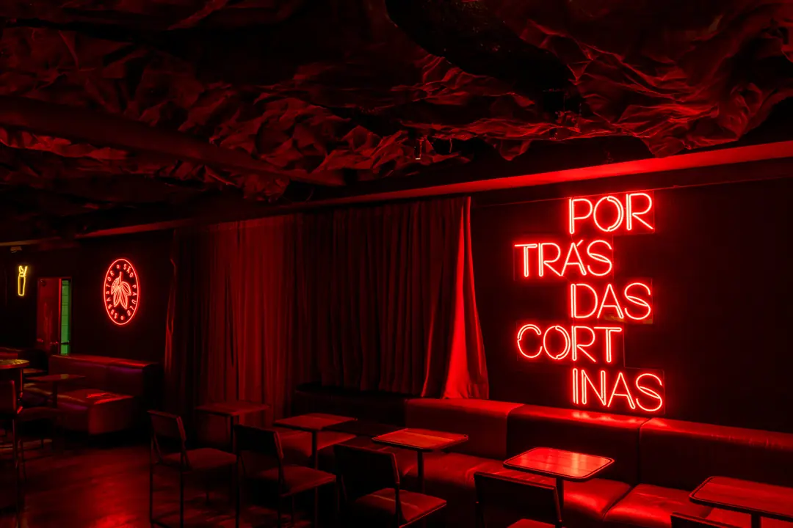
-
02
Bar do Cofre
Um segredo guardado a sete chaves, no subsolo do edifício mais emblemático de São Paulo.
Ver a casa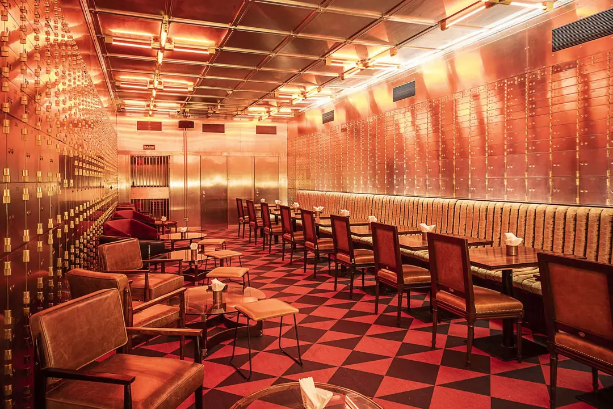
-
03
Eventos e celebrações
Para reunir quem importa. Na Oscar Freire, o Terraço do Astor recebe eventos privados.
Solicitar um evento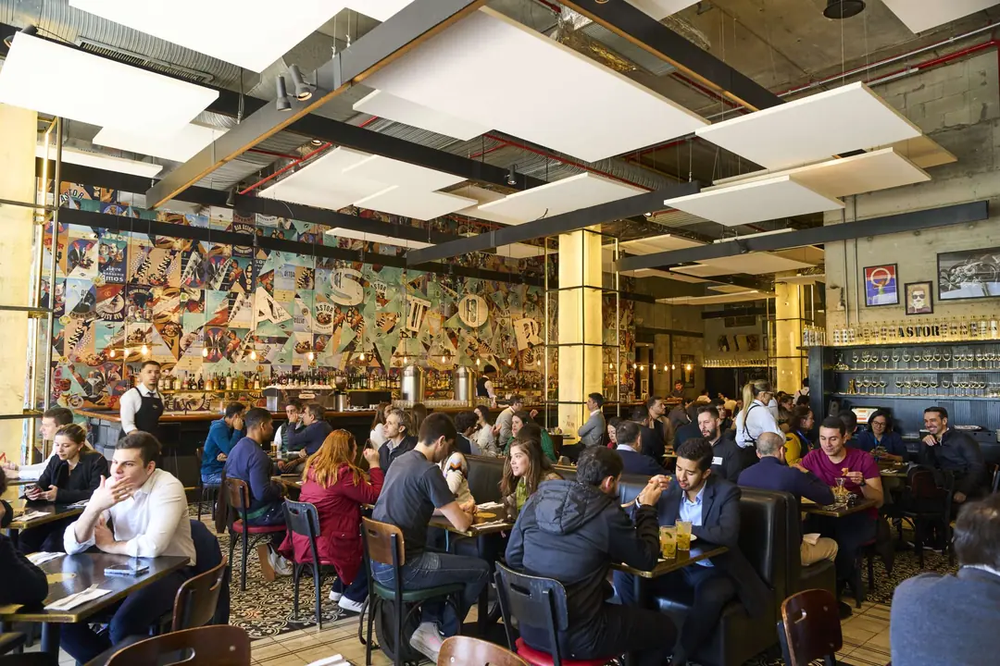
-
04
O Astor na sua casa
Sejam pratos clássicos ou alguma de nossas receitas inovadoras, o Astor também vai até você.
Pedir delivery -
05
Astor Mood
A trilha sonora das nossas casas, para ouvir onde você estiver.
Ouvir no Spotify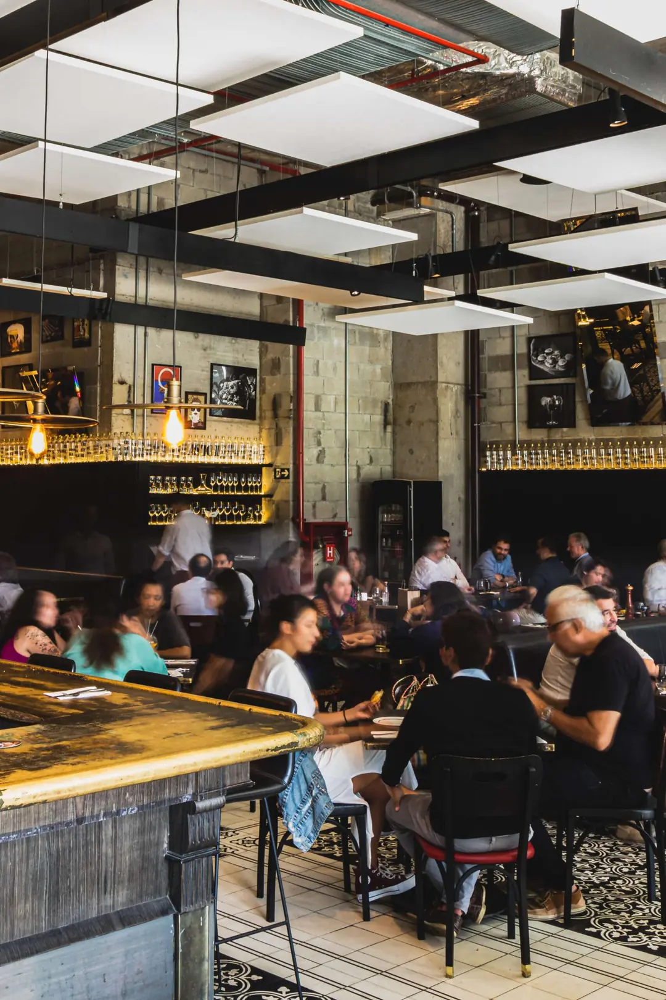
Nossas casas
Um Astor para você.
Seis endereços em São Paulo, perfeitos para você.
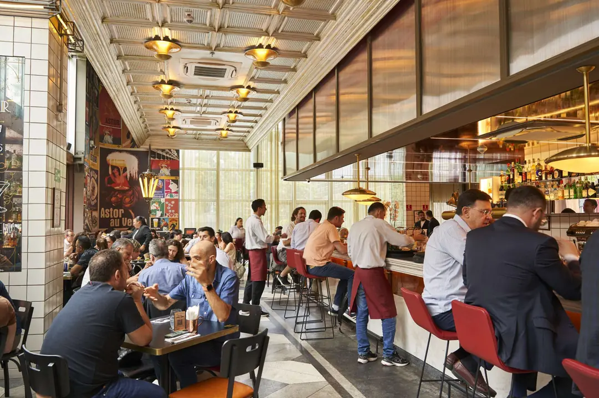
Reservas
Seu próximo encontro começa aqui.
Escolha sua casa e venha viver uma experiência Astor.
Não cobramos taxa de reserva nem de entrada. Reservas para o Bar do Cofre são feitas neste link.